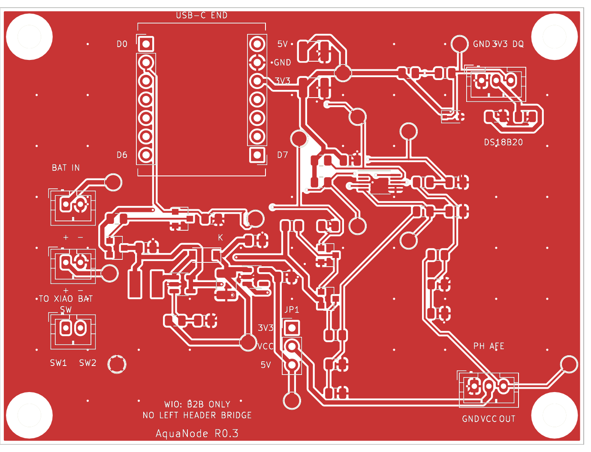
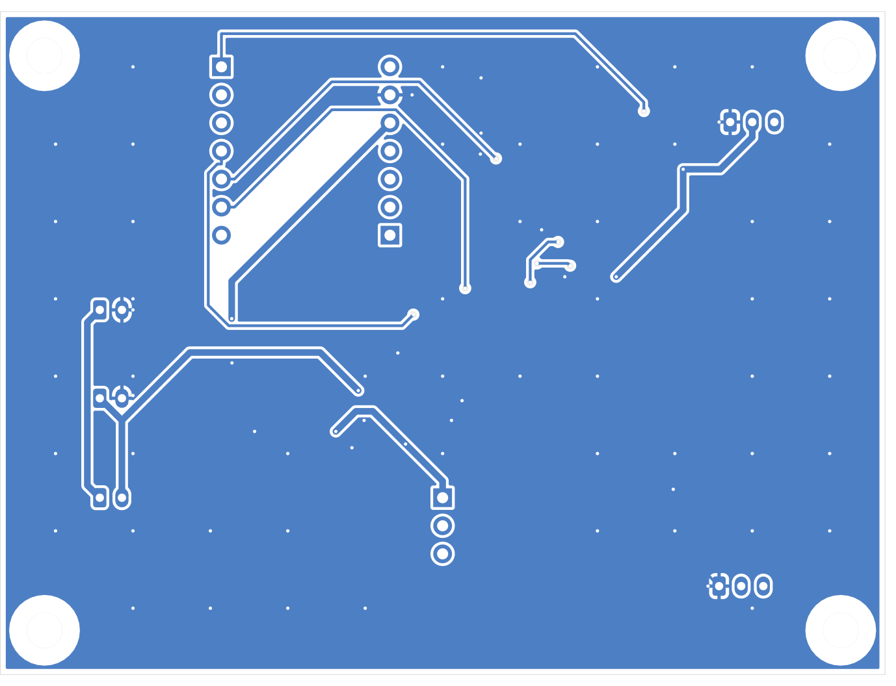
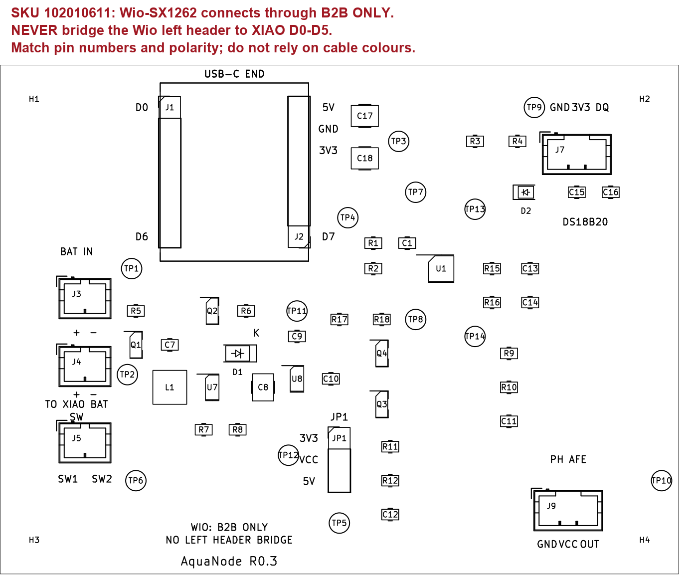

AquaNode · R0.3
Комплект схемы, трассировки и подготовки прототипа · 20 октября 2026
Слои платы

Верхний слой
Нижний слой, вид сверхуСборка

AquaNode R0.3
Ревизия по инженерному аудиту R0.2, 20 октября 2026. Исправлены механическое размещение, силовая трассировка, сшивка земли, EN стабилизатора, маркировка и представление схемы. Это проверенный комплект CAD для прототипа; физических испытаний ещё нет.
| Пункт аудита |
Что сделано |
| Пространство под XIAO |
C17/C18 перенесены правее J2; SMD убраны из контура модуля и зоны 4 мм ниже его торца. Контур показан на F.Fab; на F.SilkS — контур с разрывами у шелкографии колодок и USB-C END |
| Силовой узел |
Q1/C7/L1/U7/D1/C8/C9/U8 сгруппированы; переключающий узел проложен короткими дорожками; локальный возврат GND 0,8 мм на нижнем слое |
| Ширина питания |
Силовые линии 0,6 мм. Единственное сужение питания — 1,5 мм длины / 0,25 мм ширины непосредственно у U1.8 с шагом выводов 0,5 мм |
| Земля |
71 сквозное GND via 0,6/0,3 мм, приоритетные переходы у компонентов и распределённая сшивка двух заливок |
| EN U8 |
Вывод 3 подключён к BOOST_IN, вместе с EN U7 |
| Два AFE |
Таблица сборок A: 49,9k/49,9k; B: 10k/DNP. Текущий CAD показывает A |
| Импеданс ADS1115 |
Расчёт остаточной ошибки и RC, задержка батарейного измерения 600 мс; утверждение о полном подавлении ошибки не делается |
| Подписи |
Полярность и назначение контактов разъёмов, маркер K, ориентация XIAO и предупреждение B2B |
| Схема |
Стандартные символы KiCad R/C/L/Schottky/PMOS/NMOS; пять функциональных областей |
Открывать cad/AquaNode.kicad_pro. Быстрый просмотр: Report.html, Schematic.pdf, PCB.png (оба слоя), PCB_F.png, PCB_B.png, Assembly.png. Нижний слой изображён в координатах вида сверху, без зеркального отражения. Контакты и монтаж сверять по BOM_ru.md, Netlist_ru.md и Engineering_ru.md.
SKU 102010611: Wio-SX1262 стыкуется с XIAO ESP32S3 только через штатный B2B. Запрещено соединять сквозной пайкой левый ряд Wio с D0–D5 XIAO. Проверить фактическую ревизию, высоту колодок, вывод BAT-проводов и доступ USB. Печатный контур не заменяет примерку купленных модулей.
Сырые ERC/DRC и геометрическая сверка — checks/. Gerber и Excellon — fabrication_review/. Проверки САПР не подтверждают пульсации питания, точность pH, работоспособность mesh или герметичность. Перед эксплуатацией выполнить протоколы Purchase_and_test_ru.md; для батарейного канала действует уточнённая задержка из Analog_calculations_ru.md.
Требования MIT и инструменты журналирования сохранены. Ничего не куплено и не измерено; стадия физического Prototype по-прежнему не подтверждена. Нативный Altium-проект не создавался; предоставлен редактируемый KiCad-проект.
Проверка выпуска AquaNode R0.3
20 октября 2026. Проверка выполнена в KiCad 8.0.9. Это результаты проверки цифрового проекта, а не физического образца.
| Проверка |
Результат |
| Native ERC |
0 замечаний всех уровней |
| Native DRC |
0 замечаний всех уровней |
| Неразведённые соединения |
0 |
| Пересечения courtyard |
0 по DRC |
| Схема ↔ перечень цепей ↔ PCB |
130 именованных площадок, 0 расхождений |
| U8.3 / EN |
BOOST_IN |
| SMD в контуре XIAO с доступом 4 мм ниже торца |
0 пересечений |
| Переходы GND |
71, диаметр 0,6 мм / сверло 0,3 мм |
| Всего переходов / сегментов дорожек |
85 / 374 |
| Силовые линии |
0,6 мм; у U1.8 сужение 0,25 мм длиной 1,5 мм |
| Локальный возврат преобразователя на B.Cu |
0,8 мм |
| Длина дорожек BOOST_SW |
6,832 мм |
Сырые результаты: ERC, DRC, сверка цепей, геометрия и ширины. Нативный экспорт схемы сохранён в checks/native_netlist.net.
Ближайшие земляные переходы
Расстояние измерено от центра площадки до центра перехода; это не зазор меди. Для сквозных разъёмов сама площадка также соединяет слои.
| Площадка |
Координаты перехода, мм |
Расстояние, мм |
| U7.2 |
23; 38 |
0.863 |
| C7.2 |
20.95; 31.8 |
1.200 |
| C8.2 |
31.8; 39.475 |
0.800 |
| C9.2 |
35.95; 30.9 |
1.100 |
| U8.2 |
32.9; 37 |
0.963 |
| C10.2 |
40.8; 37 |
0.850 |
| U1.3 |
51.05; 24 |
1.250 |
| C1.2 |
48.95; 19.75 |
1.250 |
| C17.2 |
43.475; 6 |
1.000 |
| C18.2 |
43.475; 11 |
1.000 |
| J2.6 |
37.24; 7.54 |
2.000 |
| J3.2 |
12; 27 |
1.000 |
| J4.2 |
12; 34.75 |
1.031 |
| J7.1 |
65; 10 |
1.000 |
| J9.1 |
64; 52 |
1.000 |
Экспорт и просмотр
Перегенерированы шесть Gerber-слоёв (F.Cu, B.Cu, F.Mask, B.Mask, F.Silkscreen, Edge.Cuts), файл задания Gerber и Excellon. Файлы находятся в fabrication_review/. Отдельный CAM round-trip и проверка изготовителем не выполнены. Перед заказом сверить слои и сверловку в просмотрщике изготовителя.
Schematic.pdf экспортирован нативно из KiCad; схема и PNG слоёв/сборки проверены визуально. PCB_B.png показан сверху, без зеркального отражения. PNG верхнего слоя объединяет изображение меди с отдельным экспортом шелкографии; исходный SVG KiCad может отображать шелкографию под непрозрачной заливкой в некоторых просмотрщиках.
Что ещё не проверено
Физически не проверены посадка стека XIAO/Wio и BAT-проводов, распиновка купленного AFE, переходные процессы включения/выключения, шум и нагрузочная погрешность АЦП, ток сна, радиоканал, калибровка и герметичность. Прошивка и mesh не реализованы этим выпуском. ERC/DRC не подтверждают соответствие радио-нормам или требованиям отбора MIT.
Утверждение «16 SPS и RC полностью устраняют ошибку ADS1115» не подтверждено. Расчёт типовой остаточной нагрузки и метод проверки приведены в Analog_calculations_ru.md. Условия испытаний и результаты должны быть добавлены после сборки.
Инженерные решения R0.3
Контроллер и подключение
Выбран XIAO ESP32S3 с Wio SX1262, комплект Seeed SKU 102010611, без камеры Sense. Основание перехода — свободные GPIO, а не обещание меньшего тока самого процессора. Не заменять комплект на nRF52840 без переработки платы и прошивки.
| Функция |
XIAO |
GPIO ESP32S3 |
Соединение |
| DS18B20, внешнее питание |
D0 |
1 |
J1.1 → R4 → J7.3; подтяжка R3 4,7 кОм |
| PH_EN |
D1 |
2 |
J1.2, активный высокий, R6 100 кОм вниз |
| Не используется, strapping |
D2 |
3 |
J1.3 NC |
| BAT_EN |
D3 |
4 |
J1.4 → Q4; R18 100 кОм вниз |
| I2C SDA |
D4 |
5 |
J1.5, R1 4,7 кОм |
| I2C SCL |
D5 |
6 |
J1.6, R2 4,7 кОм |
| UART, резерв |
D6 / D7 |
43 / 44 |
На носителе NC |
| Radio SPI |
D8 / D9 / D10 |
7 / 8 / 9 |
Внутри покупного стека; на носителе NC |
| Radio NSS / RESET / BUSY / DIO1 / RF_SW |
B2B |
41 / 42 / 40 / 39 / 38 |
Не занимают D0–D5 |
XIAO и Wio соединяются штатным B2B. Левые отверстия Wio имеют другое назначение: нельзя соединять их длинными общими штырями с одноимёнными по положению D0–D5 XIAO. Способ установки боковых колодок, доступ к USB и BAT-площадкам проверить на купленном комплекте. Шаг между рядами носителя 15,24 мм; между контактами 2,54 мм. Четыре отверстия 3,2 мм, изолирующие стойки; радиус запретной зоны меди вокруг креплений 3,2 мм. Плата 80 × 60 мм, 2 слоя, FR4 1,6 мм, медь 1 oz. Минимум дорожки/зазора 0,2 мм, сигнальные дорожки 0,25 мм, силовые 0,6 мм и переходы 0,6/0,3 мм. У U1.8 оставлено сужение питания 0,25 мм длиной 1,5 мм. Добавлен 71 GND via; локальный возврат преобразователя на B.Cu имеет ширину 0,8 мм.
ADS1115: адрес 0x48, 100 kHz I2C, AIN0 pH, AIN1 батарея, AIN2/3 GND, однократные преобразования 16 SPS, PGA ±4,096 В. Предел PGA не разрешает вход выше питания АЦП. DS18B20 только трёхпроводное подключение; не паразитное питание. D2 — ESD-защита линии, не молниезащита.
Питание и выключатель
Защищённый 1S аккумулятор → J3 → внешний SPST между J5.1/J5.2 → VBAT → J4 → BAT-площадки XIAO. Земля непрерывная. USB подключается обычным кабелем. OFF отключает батарею; подключённый USB продолжает питать устройство. Для полного выключения отключить USB. Заряд батареи возможен при замкнутом SPST. Внешние 5 В pH никогда не соединять с VBUS XIAO.
В опубликованной Seeed схеме по ссылке v1.4 стоят SGM6029 (преобразователь 3,3 В, пометка Imax 600 мА) и SGM40567, R10=220 кОм, Icharge≈110 мА. Сам PDF имеет противоречивые обозначения V1.3/V1.5: идентифицировать фактически купленную ревизию. Параметры старого nRF LDO здесь неприменимы. 600 мА — номинал преобразователя, не гарантированный свободный ток на выводе 3V3. Суммарные пики ESP, радио и pH проверять осциллографом. Заряд 2500–3500 мА·ч при 110 мА займёт более 23–32 часов с учётом стадии CV. Нужен аккумулятор с документированной защитой, температурными пределами и допустимым зарядным током.
Q1/Q2 отключают питание TPS61040 со стороны 3V3. EN boost и EN LDO U8.3 соединены с BOOST_IN после Q1. Это убирает прямую связь EN LDO с GPIO. Само по себе это не гарантирует, что BOOST_RAW уже установился при включении EN: проверить переходы. R7=69,8 кОм/R8=20 кОм задают около 5,536 В; TPS7A2050 выдаёт 5 В с разрядом выхода при выключении. Сохранены эти две ИС, поскольку простой boost без фильтрации требует отдельного подтверждения влияния пульсаций на pH. Проверить BOOST_RAW во всех переходах ниже 6,0 В и 5V_PH в допуске модуля; абсолютный максимум ИС не использовать как рабочий предел. Максимальную допустимую нагрузку всего узла подтвердить отдельно, начать с эквивалента 10 мА, затем 20 мА.
JP1 по умолчанию 2–3: pH получает 5 В. Положение 1–2 — переключаемые 3,3 В только для AFE, допускающего это питание. Один шунт. Для окончательной сборки без перемычки можно соединить выбранную пару припоем после проверки модуля.
Аналоговая часть
Подробные конфигурации A/B, нагрузочная ошибка и задержки приведены в Analog_calculations_ru.md. Для батареи после BAT_EN=1 ждать не менее 600 мс. Для pH выдержать прогрев AFE, затем не менее 300 мс для RC; это разные процессы. ADS1115 — 0x48, single-shot, PGA ±4,096 В, 16 SPS. Не менять коэффициент делителя только по напряжению питания AFE: важен его документированный выход.
Энергия: что реально удалось убрать
Исключён постоянно питаемый DS2482 и расход его режима ожидания. R6 теперь потребляет 3,3/100k=33 мкА при PH_EN=1 вместо примерно 0,70 мА на 4,7 кОм при 3,3 В. R5 расходует ещё около 33 мкА только при включённом pH. Батарейный делитель 4,2/200k=21 мкА только во время измерения; R17 около 4,2 мкА при включении, R18 около 33 мкА от 3V3. Отдельно учитывать утечки транзисторов, BMS, зарядника, ADS и собственный ток XIAO.
При условных 10 мА pH на 5 В и эффективности 80% цепь требует около 62,5 мВт, то есть 18,9 мА от 3,3 В. 120 секунд работы каждые 900 секунд дают средние 8,33 мВт только для pH. 120 секунд — сценарий, не подтверждённое время прогрева. Его определяют по стабилизации показаний после холодного включения. Средняя энергия должна включать измеренные режимы MCU, TX/RX, ожидания и преобразователей. Расчёт ресурса: usable_Wh / average_W / 24. Для 3,7 В × 3 А·ч × 0,7 это 7,77 Wh; 20 мВт дают расчётные 16,2 суток, 100 мВт — 3,24 суток. Это иллюстрации, не прогноз автономности AquaNode.
Радио и прошивка
Собственный raw LoRa, не LoRaWAN. Для Тайваня выбран исследуемый диапазон 920–925 МГц, начальная мощность +14 dBm. Одна фиксированная несущая с BW125 не считается автоматически соответствующей NCC. Для FHSS требуется реализовать и проверить все условия LP0002 §5.8.1, а не просто менять частоту иногда. Предварительный план: 12 каналов 920,3+0,4×i МГц, i=0…11; равномерное псевдослучайное использование, учёт повторов и ретрансляций, соблюдение dwell-time. SF7/BW125/CR4/5, preamble 8, explicit header, CRC, 32 байта дают около 71,936 мс на пакет. Для окончательного соответствия нужны радиочастотные измерения и проверка действующих правил/сертификации оборудования.
Wio требует корректного управления RF_SW GPIO38 и TCXO 3,0 В согласно официальному драйверу Seeed. PHY, синхронизация скачков, сохранение sequence/boot ID и работа ретранслятора — задачи прошивки. Прошивка, FHSS и mesh этой поставкой не реализованы и не проверены. Два узла доказывают только один радиоканал; mesh требует как минимум третьего узла и испытания с отключённым прямым путём.
Источники для изменённых решений
Остальные источники и лицензии сохранены в Sources_ru.md, ATTRIBUTION.md и licenses/. Старые технические решения R0.1 не являются инструкцией по сборке R0.3.
Уточнение аудита EN
Для TPS7A20 паспорт задаёт VEN относительно GND (рекомендуемый диапазон 0–6 В), а не универсальное ограничение VEN≤VIN+0,3 В. Поэтому тезис о неизбежном повреждении при EN=3,3 В и VIN=0 В не подтверждён этим паспортом. Запрошенный перенос на BOOST_IN выполнен; реальный запуск/выключение и ограничение VOUT относительно VIN остаются предметом измерения. Источник: TPS7A20, разделы 5.1/5.3, https://www.ti.com/lit/ds/symlink/tps7a20.pdf.
Механическая зона R0.3
Номинальный контур XIAO: x=18,87…36,37 мм, y=2,12…23,12 мм. До y=27,12 мм оставлен доступ под BAT-провода/B2B. Автоматическая проверка габаритов SMD в этой области не нашла пересечений. C17/C18 находятся правее J2. Высота стека, реальные выступы Wio и траектория проводов должны быть проверены на купленном SKU; двухмерный контур не является полной трёхмерной моделью.
ЗАПРЕЩЕНО соединять сквозной пайкой левый ряд Wio-SX1262 с D0–D5 XIAO ESP32S3. Соединение XIAO/Wio — через B2B.
Вход ADS1115: остаточная ошибка и варианты сборки
RC-фильтры и 16 SPS не устраняют постоянную ошибку нагрузки входа. Утверждение о её полном подавлении без буфера не подтверждается. ОУ не возвращён: для прототипа выбран расчёт нагрузки, калибровка всей цепи и проверка установления. Если требуется гарантированная точность без калибровки, эта конфигурация не является достаточным доказательством.
Варианты R9/R10
| Сборка |
AFE и предел выхода |
R9 |
R10 |
Идеальный масштаб |
JP1 |
| A, базовая CAD/BOM |
5-вольтовый AFE, выход не выше 5,5 В; Elecrow только после подтверждения его спецификации |
49,9 кОм 0,1% |
49,9 кОм 0,1% |
1:2; 5,5 В → 2,75 В |
2–3: 5 В |
| B |
DFRobot SEN0169-V2, документированный выход 0–3,0 В |
10 кОм |
DNP — не устанавливать |
Номинально 1:1 через RC |
1–2: 3,3 В; 2–3 также допустимо по питанию AFE |
Сборка B отличается диапазоном выхода AFE, а не только напряжением его питания. Нельзя ставить R10=DNP для неизвестного выхода 5 В. В B выбран R9=10 кОм; вариант 0 Ом не используется, чтобы сохранить ограничение переходного тока. В обеих сборках остаются R15=1 кОм, C11=1 мкФ и C13=100 нФ. Место R10 сохраняется на PCB. В прошивке коэффициент масштаба и идентификатор калибровки должны соответствовать фактической сборке. Номинальное 1:1 не означает нулевую нагрузочную ошибку.
Полезный диапазон при PGA ±4,096 В: 1 LSB = 125 мкВ; 3 В в B соответствует примерно 24000 кодов вместо 12000 после деления на два. Это число кодов, не обещание 16 эффективных бит точности.
Расчёт нагрузки
TI ADS1115, таблица 5.5 и раздел 7.3.2 описывает переключаемые входные ёмкости и типовые импедансы. Для выбранного PGA: Zcm≈6 МОм, Zdiff≈15 МОм. Частота модулятора около 250 кГц; 16 SPS — частота готовых результатов, а не переключения входных конденсаторов. Уменьшение SPS не делает вход идеальным вольтметром.
Для иллюстративной оценки single-ended берём Zeff=6 МОм || 15 МОм≈4,286 МОм. Тогда относительное падение ≈ Rs/(Zeff+Rs), где Rs=Rth+1 кОм. Это модель по типовым величинам, не гарантированный worst-case и не замена модели производителя или испытанию. Выходное сопротивление AFE в таблице принято пренебрежимо малым; реальный источник добавит вклад.
| Канал |
Rth |
Rs с последовательным резистором |
Оценка потери масштаба |
Пример ошибки на входе ADC |
| pH A |
24,95 кОм |
25,95 кОм |
0,602% |
16,55 мВ при 2,75 В |
| pH B |
10 кОм |
11 кОм |
0,256% |
7,68 мВ при 3,0 В |
| Батарея |
50 кОм |
51 кОм |
1,176% |
24,70 мВ при 2,1 В |
Эта нагрузка существует при преобразовании и не исчезает из-за C11/C12. Двухточечная калибровка может компенсировать стабильный линейный масштаб/смещение, но не гарантирует отсутствие дрейфа, нелинейности или ошибки после переключения каналов. Поэтому неизвестную ошибку не объявляем полностью подавленной.
Установление RC
Для оценки медленного режима двухзвенной цепи используем τ≈Rth×(1 мкФ+0,1 мкФ)+1 кОм×0,1 мкФ. До относительного остатка 0,01% первого порядка требуется около 9,21τ. Это оценка внешней RC-цепи, а не полный transient-анализ переключаемого входа.
| Канал |
τ, мс |
Оценка 0,01%, мс |
Начальная задержка прошивки |
| pH A |
27,545 |
254 |
Не менее 300 мс после установления самого AFE |
| pH B |
11,1 |
103 |
Не менее 300 мс после установления самого AFE |
| Батарея |
55,1 |
508 |
Не менее 600 мс после BAT_EN=1 |
Прежние 300 мс для включённого батарейного делителя заменены на 600 мс. Время прогрева pH AFE/электрода определяется отдельно: RC-задержка его не заменяет. После изменения MUX/PGA дождаться завершения преобразования по OS/RDY, первую выборку отбросить, затем собирать серию на фиксированном канале. Не переключать MUX посередине ожидаемого преобразования. Длительность 1/16 с≈62,5 мс имеет допуск генератора, поэтому готовность лучше опрашивать.
Проверка до заявления точности
Подать не менее трёх известных напряжений через реальный AFE/эквивалент его выходного сопротивления; записать первую и последующие выборки после переключения, после включения питания и после TX. Сравнить 16/32/64 SPS и несколько задержек; отдельно проверить шум с включённым/выключенным boost. Внутренняя цель для остаточного сдвига после переключения — ≤1 мВ на ADC относительно установившегося среднего, с учётом неопределённости источника. Это цель разработки, не полученный результат. Проверить калиброванный масштаб на независимых точках и температурах. При провале уменьшить импеданс или добавить буфер с повторной проверкой питания и ошибок.
Проверить входы также при выключении: 3,0 В безопасны только относительно работающего питания ADC. Снятие 3V3, остаточный заряд RC и подпитка через вход требуют осциллограммы; последовательные резисторы не являются универсальной защитой. Изменение EN U8 на BOOST_IN не заменяет эту проверку. Числовые результаты модели находятся в analog_calculations.json; аппаратных результатов пока нет.
BOM R0.3 — сборка A и вариант B
Основной CAD и номиналы на схеме относятся к сборке A. Два изменения варианта B явно указаны в последних столбцах. Все остальные позиции одинаковы. Цена/наличие не подтверждены; покупные модули и корпус перечислены отдельно.
В сборке A JP1 2–3 (5 В). В B не менять R11/R12 батареи; менять только R9/R10. Место DNP остаётся пустым, не закорачивать. S1 — внешний SPST, приобретается отдельно; J5 — разъём B2B-PH-K-S(LF)(SN) на носителе. Тестовые площадки не закупаются.
Правило стека: только B2B; запрещена общая сквозная пайка левого ряда Wio и D0–D5 XIAO.
Соединения R0.3
Именованные контакты схемы, design.json и PCB сверены нативным экспортом KiCad. Вариант A; вариант B изменяет номиналы/комплектацию R9/R10, а не медные сети.
| Сеть |
Контакты |
| 3V3 |
C1.1, C15.1, C16.1, C17.1, C18.1, J2.5, J7.2, Q1.2, R1.1, R2.1, R3.1, R5.1, TP3.1, U1.8 |
| 5V_PH |
C10.1, JP1.3, TP5.1, U8.5 |
| ADC_BAT |
C14.1, R16.2, TP14.1, U1.5 |
| ADC_PH |
C13.1, R15.2, TP13.1, U1.4 |
| BAT_DIV |
C12.1, R11.2, R12.1, R16.1 |
| BAT_EN |
J1.4, Q4.1, R18.1, TP4.1 |
| BAT_GATE |
Q3.1, Q4.3, R17.2 |
| BAT_SENSE |
Q3.3, R11.1 |
| BOOST_FB |
R7.2, R8.1, U7.3 |
| BOOST_IN |
C7.1, JP1.1, L1.1, Q1.3, U7.4, U7.5, U8.3 |
| BOOST_RAW |
C8.1, C9.1, D1.1, R7.1, TP12.1, U8.1 |
| BOOST_SW |
D1.2, L1.2, U7.1 |
| GND |
C1.2, C10.2, C11.2, C12.2, C13.2, C14.2, C15.2, C16.2, C17.2, C18.2, C7.2, C8.2, C9.2, D2.2, J2.6, J3.2, J4.2, J7.1, J9.1, Q2.2, Q4.2, R10.2, R12.2, R18.2, R6.2, R8.2, TP6.1, U1.1, U1.3, U1.6, U1.7, U7.2, U8.2 |
| I2C_SCL |
J1.6, R2.2, TP8.1, U1.10 |
| I2C_SDA |
J1.5, R1.2, TP7.1, U1.9 |
| OW_CABLE |
D2.1, J7.3, R4.2, TP9.1 |
| OW_LOCAL |
J1.1, R3.2, R4.1 |
| PH_DIV |
C11.1, R10.1, R15.1, R9.2 |
| PH_EN |
J1.2, Q2.1, R6.1, TP11.1 |
| PH_GATE |
Q1.1, Q2.3, R5.2 |
| PH_OUT |
J9.3, R9.1, TP10.1 |
| PH_SUPPLY |
J9.2, JP1.2 |
| VBAT |
J4.1, J5.2, Q3.2, R17.1, TP2.1 |
| VBAT_RAW |
J3.1, J5.1, TP1.1 |
NC: J1.3, J1.7, J2.1, J2.2, J2.3, J2.4, J2.7, U1.2, U8.4
U8.3 EN → BOOST_IN, не PH_EN. U7.4 и U7.5 также BOOST_IN.
J1.1–7: XIAO D0–D6. J2.1–7: D7,D8,D9,D10,3V3,GND,5V. NC означает отсутствие соединения на носителе, не внутри Wio.
J3.1/2: аккумулятор +/−; J4.1/2: BAT+/BAT− XIAO; J5.1/2: SW1/SW2 внешнего SPST. J7.1/2/3: GND/3V3/DQ. J9.1/2/3: GND/VCC/OUT. JP1.1/2/3: 3V3/VCC/5V. VCC — выбранное питание AFE, не отдельный источник.
Соответствие требованиям и доказательства
Статус на 20 октября 2026: по сообщению владельца ничего не куплено. Есть проект электроники, но нет физического прототипа, прошивки и результатов измерений. Нельзя выбирать стадию Prototype только на основании CAD-файлов.
Документ пользователя использован как план подготовки. Его рекомендации не превращены в обязательные правила MIT. Упоминание ESP8266/мутности в нём не заменяет исходное ТЗ: здесь ESP32S3, температура, pH и батарея; датчиков мутности и кислорода нет.
| Требование / рекомендация |
Что подготовлено |
Что ещё необходимо |
Доказательство |
| Функционирующая первоначальная версия — критерий стадии Prototype |
Трассированная плата, BOM, проверки CAD |
Купить, собрать, написать и проверить прошивку |
Непрерывное видео работающей цепочки |
| Реальные параметры воды |
DS18B20 и вход pH AFE предусмотрены |
Калибровка и сравнение с эталоном |
Исходные коды АЦП, температуры, условия, коэффициенты |
| Передача и сохранение |
Интерфейс SX1262, формат журналов и инструменты записи |
Реализовать связь, собрать передатчик и приёмник |
Два независимых журнала TX/RX с идентификаторами |
| Mesh, если заявляется |
Распиновка не препятствует реализации |
Третий узел, маршрутизация, проверка ретрансляции |
Приём при заблокированном прямом пути, маршрут и TTL |
| Работа в воде — сильное подтверждение |
Протокол подготовлен |
Корпус, гермовводы, поплавок, испытания |
Фото, время, масса до/после, состояние внутри |
| Повторяемость и автономность |
Методика и формула энергобюджета |
Измерить режимы и длительность работы |
Осциллограммы/журнал тока, полный профиль, отказы |
| Стоимость и воспроизводимость |
MPN носителя и перечень покупок |
Фактические цены, доставка, ревизии |
Чеки/счета, итоговая BOM собранного экземпляра |
| Климатическая польза |
Проверяемая гипотеза ниже |
Подтвердить проблему и действия оператора |
Интервью, пилот, заранее выбранная метрика |
| Внешнее признание/YIC |
Ничего не подтверждено |
Только реальные документы при наличии |
Публичная ссылка или документ организатора |
Количество пакетов, длительность теста и пороги точности ниже — внутренние цели разработки, а не требования MIT. Пример «97 из 100» из приложенного документа не является результатом AquaNode и не включён в доказательства.
Практический маршрут
Сначала собрать два модульных узла на столе: один измеряет температуру, второй сохраняет принятые данные через USB на ноутбук. Собственная PCB не обязательна для этого первого доказательства. После устойчивой связи добавить pH, затем корпус и короткий водный тест. Заявлять ровно то, что удалось воспроизвести: один радиоканал не называть mesh, краткий тест не называть многомесячной автономностью.
Если до подачи нет работающего экземпляра, электронный проект остаётся стадией концепции. Обещание будущей сборки не заменяет выполнение критерия Prototype. Эта ревизия повышает готовность к сборке, но сама по себе не закрывает условия участия.
Проверяемая гипотеза пользы
Рабочая гипотеза: оператор рыбоводного хозяйства использует сообщения о температуре и pH, чтобы вовремя проверить водоём и принять заранее согласованное действие. Для пилота нужно назвать конкретного оператора, сравнить время обнаружения отклонений с ручными обходами и фиксировать последующие действия. Снижение потерь рыбы, расхода энергии или выбросов пока не измерено. Температура и pH не измеряют растворённый кислород; не делать выводов о его концентрации и не запускать автоматическое управление аэрацией только по этим двум показателям.
Комплект доказательств после испытаний
Хранить вместе: идентификатор экземпляра и ревизии; фото соединений; версии прошивки; исходные TX/RX журналы; калибровку и эталон; условия/место/дату; видео; таблицу отказов; фактическую BOM; краткий отчёт с ограничениями. Не редактировать исходные журналы для удаления неудачных измерений — помечать исключения отдельно. Публиковать только данные с разрешением владельца площадки.
В разделе заявки о сделанном описывать только завершённые работы; план выделять отдельно. Сейчас допустимая формулировка: «Разработана и проверена средствами KiCad схема и трассировка носителя. Закупка, прошивка и физические испытания ещё не выполнены». После теста заменить её фактическими числами с условиями и ссылками, не заранее заполненным успехом.
Официальные источники и сроки
MIT Solve Global Climate Challenge описывает стадии и критерии. Официальная анкета 2027 просит объяснить выбранную стадию и уже выполненные работы. На проверенной странице указан срок 6 ноября 2026, 12:00 EST; в PDF анкеты — 2 ноября. Для внутренней подготовки использовать более раннюю дату, окончательный срок сверить в действующем портале перед подачей. Наличие всех рекомендуемых доказательств не гарантирует отбор.
Закупка, сборка и испытания
Ничего из перечисленного пока не куплено. Цены и наличие здесь не заявлены: фактическую стоимость фиксировать по заказам. Сначала проверить сроки доставки, особенно до срока подачи заявки.
Первая закупка
| Позиция |
Количество |
Назначение / условие |
| Seeed XIAO ESP32S3 + Wio SX1262, SKU 102010611 |
2 комплекта |
Датчик и приёмник; третий комплект нужен для mesh |
| Антенна и согласованный переходник для 920–925 МГц |
2 |
Проверить IPEX/U.FL и комплектацию; не включать TX без нагрузки |
| DS18B20 в зонде с известной распиновкой |
1 |
Для начального водного теста; срок погружения и стойкость оболочки подтвердить |
| ADS1115, модуль 3,3 В для макета |
1 |
Не путать с ADS1015; проверить подтяжки I2C к 3,3 В |
| pH AFE с электродом |
1 |
Elecrow CRT14016P v2 только после получения актуальной схемы/распиновки; альтернатива DFRobot SEN0169-V2 с документированным выходом |
| Буферы pH 4,00 / 7,00 / 10,00 и раствор хранения |
набор |
Срок годности и температурные таблицы; не хранить электрод в дистиллированной воде |
| Защищённый аккумулятор 1S 2500–3500 мА·ч |
1 |
Проверить полярность разъёма и параметры защиты |
| USB-кабели передачи данных |
2 |
Обычные кабели без разрезания |
| SPST, разъёмы, провод, макетная плата |
набор |
По распиновке R0.3, питание pH не от GPIO |
| Корпус, гермовводы, крепление, поплавок |
набор |
Под реальные размеры и среду; отдельный пустой тест на герметичность |
| Мультиметр, регулируемый БП, осциллограф, эталонный термометр |
доступ |
Можно использовать лабораторные приборы, не обязательно покупать |
Компоненты носителя — в BOM_ru.md. Для первого опыта с температурой pH и его питание можно не монтировать; такой опыт не доказывает работу pH. Для макета с pH воспроизвести делители и ограничения R0.3: выход AFE не подавать непосредственно на АЦП, пока его диапазон не подтверждён. PCB заказывать после сверки механики комплекта и корпуса.
Последовательность включения
- Без питания проверить ориентацию всех разъёмов, D/S MOSFET, полярность диода, отсутствие КЗ, JP1 2–3. Проверить соответствие фактических пинов XIAO таблице Engineering_ru.md.
- Без pH и батареи включить XIAO от USB, проверить 3V3. PH_EN/BAT_EN должны быть низкими во время старта, сброса и перепрошивки.
- Проверить ADS1115 по адресу 0x48, отдельно DS18B20 с CRC. Не считать код ошибки или стартовое значение датчика реальным измерением.
- Подать известные напряжения в разрешённом диапазоне на PH_OUT, проверить масштаб АЦП и установление. Проверить батарейный канал на эквиваленте аккумулятора 3,3/3,7/4,2 В, не подавать эти напряжения на AIN напрямую.
- Проверить включение 5V_PH на резистивной нагрузке, пульсации и выбросы. Затем подключать документированный AFE. Не соединять два источника 5 В.
- Проверить все переходы USB/батарея/SPST и сброс MCU осциллографом. Не должно быть недопустимых напряжений на входах АЦП, устойчивого паразитного питания или неконтролируемого включения pH. При провале исправить схему до водного теста.
- Проверить TX/RX сначала в контролируемых условиях с корректной антенной/нагрузкой и настройками. Режим вне стенда — после проверки требований NCC.
Испытания и внутренние критерии
До начала теста записать экземпляр, прошивку, конфигурацию радио, приборы и их точность, время UTC, температуру среды и напряжение батареи. Каждый прогон имеет отдельный run_id. Следующие цели предварительные, согласованные с задачей прототипа, не норматив MIT.
| Тест |
Метод |
Предварительная цель / что сохранить |
| Температура |
3 устойчивые точки в рабочем диапазоне воды, минимум 10 пар с эталоном на точку; повторить после перезапуска |
Цель ошибки ≤0,5 °C с учётом неопределённости эталона; сохранить все пары и время стабилизации |
| АЦП |
Минимум 3 напряжения каждого канала, сравнение мультиметром, до/после TX и включения boost |
Оценить масштаб, смещение, шум и установление; не смешивать ошибку AFE с ошибкой АЦП |
| pH |
Калибровка двумя свежими буферами, третий независимый буфер для проверки; температурная поправка по паспорту буфера |
Цель ≤0,2 pH для первого прототипа; измерить холодный прогрев, повторяемость и дрейф |
| Радиоканал |
Не менее 100 реально завершённых отправок за согласованное окно; известная дистанция, высоты антенн, препятствия |
Цель доставки ≥95%; считать уникальные пакеты по TX-журналу, отдельно повторы, RSSI/SNR и потери |
| Mesh |
Три узла, отключить прямой путь и повторить с выключением ретранслятора |
Подтвердить маршрут, TTL, исключение циклов и поведение при отказе; двух узлов недостаточно |
| Питание |
Записать sleep, измерение, pH, TX/RX, запуск и полный рабочий цикл |
Средняя энергия и пики; автономность рассчитывать только по измеренному профилю |
| Герметичность |
Сначала пустой корпус с индикатором влаги; затем короткий тест собранного буя со страховкой |
Цель первого прогона 30–60 мин без влаги и потери устойчивости; это не IP-сертификация |
| Сквозной тест |
Датчик в воде → радио → файл на ноутбуке; повторить в другой день |
Непрерывное видео, реальные временные метки, сравнение с эталоном, все отказы |
Для каждого сравнения вычислить среднее смещение, максимальную абсолютную ошибку, RMSE и число независимых условий. Десять отсчётов в одной воде не равны десяти независимым испытаниям. Не использовать те же точки одновременно для подгонки и заявления независимой точности.
Шаблон записи прогона
- Run ID, дата/время UTC, оператор, версия платы/прошивки:
- Цель и заранее выбранный критерий:
- Фактическая сборка и фотографии:
- Среда, дистанция, антенны, параметры радио, питание:
- Эталон и его неопределённость, буферы и температура:
- Ссылки на исходные TX/RX журналы и видео:
- Реальный результат, включая потери и ошибочные измерения:
- Исключённые точки и обоснование, без удаления исходных данных:
- Ограничения и следующий шаг:
Пока все поля пусты намеренно. Программные тесты инструментов записи не заменяют этот отчёт.
Источники и границы подтверждения
Проверено 19.10.2026. Внешние цены и наличие меняются. Для платы использованы аппаратные MPN; поисковые ссылки магазина не являются обещанием наличия. Скачанные исходники идентифицированы хешами в reference_sources/source_manifest.json; поставляемые footprints — отдельным манифестом.
| Источник |
Для чего использован |
| Исходный проект, фиксированный commit |
Схема, PCB, библиотеки, BOM, лицензирование |
| Статья авторов, PLOS ONE |
Авторство и назначение исходного проекта |
| Seeed nRF kit |
Конкретный комплект 102010710 |
| Схема Wio nRF expansion |
Кнопка, DIO1, BUSY, RESET, NSS, RF_SW, SPI |
| nRF GPIO |
Физические P0/P1 |
| Текущая схема XIAO nRF |
Выбор источников, зарядка, LDO; аппаратную ревизию покупки сверить |
| Ранее опубликованная XIAO Sense v1.1 |
Сопоставление ревизий, не смешивать BOM зарядников |
| Seeed ESP kit |
Конкретный комплект 102010611 |
| Схема Wio ESP B2B |
Отличие от nRF extension |
| Официальный код Seeed SX1262 BSP |
Фактические GPIO в инициализаторе ESP |
| Elecrow CRT14016P |
Цена, заявленные 5 В, габариты/отклик |
| Elecrow wiki |
Ссылка на архив схемы, который оказался v1.0 |
| Архив Elecrow |
Имена файлов crowtail-PH Sensor v1.0.sch/.brd; не доказательство v2 |
| DFRobot Pro V2 |
Питание, выход, эксплуатация SEN0169-V2 |
| DFRobot SEN0169-V2 магазин |
Цена комплекта |
| DFR0952 |
Топология готового модуля/доступные характеристики; Iq не подтверждён |
| ADS1115 datasheet |
DG(S) pin map, питание, PGA и преобразование |
| DS2482-100 datasheet |
SOIC pin map, адрес, ток и 1-Wire |
| PCA9536 datasheet |
Адрес, слабые подтяжки, startup, POR errata |
| TPS61040 datasheet |
SOT23 pins, feedback, ток ключа, сквозной путь L+D |
| TPS7A20 datasheet |
5V LDO, DBV pins, пределы/разряд выхода |
| OPA333/OPA2333 datasheet |
Буферы, диапазон питания/входов |
| TMUX1511 datasheet |
Защита при снятии питания, утечки, TSSOP pin map |
| MCP100/MCP101 |
Supervisor 3.15 В, pin map SOT23 |
| Bourns SRN4018 |
Индуктивность, ток насыщения и рекомендуемые площадки 1,5×3,6 мм |
| NCC LP0002 |
§5.8.1 для 920–925 МГц IoT; сайт иногда перенаправляет на Index |
| Официальный PDF NCC |
Дополнительная официальная копия правил; сверять актуальность при выпуске |
| TE/Linx ANT-916-CW-HWR-SMA |
Диапазон антенны и SMA |
| Taoglas CAB.011 |
U.FL-compatible пигтейл с корпусным SMA |
| Adafruit 328 |
Защищённый 2500 мА·ч аккумулятор |
| Adafruit 381 |
DS18B20 и ограничения герметичности/коррозионной среды |
| KiCad footprints |
Локальные посадочные места; SHA256 в manifest |
| KiCad library licence |
CC BY-SA 4.0 с library exception |
| Altium KiCad importer |
Официальный путь импорта, не доказательство успешного переноса R0.1 |
Измерением, а не источником подтверждаются
Выход и распиновка Elecrow v2.0, потребление обоих AFE, время прогрева при циклическом питании, ток готового узла, пульсации/наводки, ресурс батареи, герметичность, точность pH после сборки и соответствие конкретного радиоустройства требованиям NCC. Эти характеристики не подменены данными старой ревизии или рекламной точностью ADC.